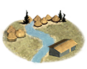
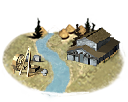
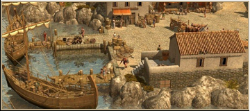

RTR: Imperium Surrectum
RTR: Imperium SurrectumRiver Ports
2 levels, each replacing the one before it — you upgrade in place rather than building alongside.
River Ports → Inland Trade centre
Pictures are the game's own building art. Where a culture ships none of its own, the game falls back to another culture's, and that is what is shown here.
Levels at a glance
| Level | Cost | Build time | Minimum settlement | Upgrades to | Level | Cost | Build time | Minimum settlement | Upgrades to | ||
|---|---|---|---|---|---|---|---|---|---|---|---|
 | River Ports | 5,000 | 4 | large town | Inland Trade centre |  | Inland Trade centre | 7,500 | 6 | city | — |
Costs in denarii, build time in turns.
River Ports

River Ports are important in the development of trade transport and communication.
River Ports played an important role in the economy of the ancient world. Most of the important fluvial ways of today were used just as heavily in ancient times and enabled the transport of valuable and numerous tradable goods, from food to tin.
Wording varies by culture: 2 versions of this description exist in the game files.
| Cost | 5,000 denarii | Build time | 4 turns | Minimum settlement | large town | Upgrades to | Inland Trade centre |
What it does
- taxable income -10 to -2, scaling with settlement size (player only)
Show 12 effects that apply only in the circumstances shown
- trade level +1 — only when
disabling_in_winter - +1 trade income — only when
disabling_in_winter and river_bulk_resource - -2 taxable income — only when
size1 and building_present_min_level river_port river_port1 and not is_player - -3 taxable income — only when
size2 and building_present_min_level river_port river_port1 and not is_player - -4 taxable income — only when
size3 and building_present_min_level river_port river_port1 and not is_player - -5 taxable income — only when
size4 and building_present_min_level river_port river_port1 and not is_player - -6 taxable income — only when
size5 and building_present_min_level river_port river_port1 and not is_player - -7 taxable income — only when
size6 and building_present_min_level river_port river_port1 and not is_player - -8 taxable income — only when
size7 and building_present_min_level river_port river_port1 and not is_player - -9 taxable income — only when
size8 and building_present_min_level river_port river_port1 and not is_player - -10 taxable income — only when
size9 and building_present_min_level river_port river_port1 and not is_player - -10 taxable income — only when
size10 and building_present_min_level river_port river_port1 and not is_player
Inland Trade centre

A Merchants' District is the commercial hub of many provinces. Anything imaginable is available to a man with gold in his purse. Artisans, carpenters, wheelmakers, and innkeepers all ply their trades here. Workshops employed both citizens and slaves. Artisans formed guilds and collectively improved their area.
The growth of fluvial trade led the Romans to improve their infrastructure. The inlands ports became very elaborated and were included in some oppida. Centred on a great jetty, the most important were place under the blessing of the divinities, who were later symbolized with big statues, like in Geneva. Moreover, this development also led to the establishment of a complete customs system all along the rivers.
Wording varies by culture: 6 versions of this description exist in the game files.
| Cost | 7,500 denarii | Build time | 6 turns | Minimum settlement | city |
What it does
- taxable income -12 to -4, scaling with settlement size (player only)
Show 13 effects that apply only in the circumstances shown
- trade level +2 — only when
disabling_in_winter - +1 trade income — only when
disabling_in_winter and river_bulk_resource - +1 population growth — only when
disabling_in_winter - -4 taxable income — only when
size1 and building_present_min_level river_port river_port2 and not is_player - -5 taxable income — only when
size2 and building_present_min_level river_port river_port2 and not is_player - -6 taxable income — only when
size3 and building_present_min_level river_port river_port2 and not is_player - -7 taxable income — only when
size4 and building_present_min_level river_port river_port2 and not is_player - -8 taxable income — only when
size5 and building_present_min_level river_port river_port2 and not is_player - -9 taxable income — only when
size6 and building_present_min_level river_port river_port2 and not is_player - -10 taxable income — only when
size7 and building_present_min_level river_port river_port2 and not is_player - -11 taxable income — only when
size8 and building_present_min_level river_port river_port2 and not is_player - -12 taxable income — only when
size9 and building_present_min_level river_port river_port2 and not is_player - -12 taxable income — only when
size10 and building_present_min_level river_port river_port2 and not is_player
What the shorthands in those conditions stand for (13)
These are the mod's own, quoted from the game files unchanged.
| Shorthand | Stands for | Shorthand | Stands for | Shorthand | Stands for | Shorthand | Stands for |
|---|---|---|---|---|---|---|---|
disabling_in_winter | not_extreme_cold or not major_event "winter" | not_extreme_cold | not hidden_resource sub_artic and not hidden_resource alpine | river_bulk_resource | resource grain or resource timber or resource stone or resource marble | size1 | major_event "empire_size1" |
size10 | major_event "empire_size10" | size2 | major_event "empire_size2" | size3 | major_event "empire_size3" | size4 | major_event "empire_size4" |
size5 | major_event "empire_size5" | size6 | major_event "empire_size6" | size7 | major_event "empire_size7" | size8 | major_event "empire_size8" |
size9 | major_event "empire_size9" |